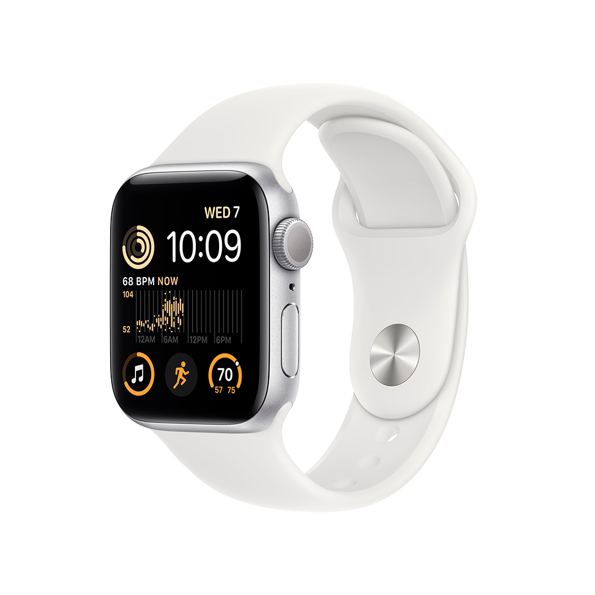
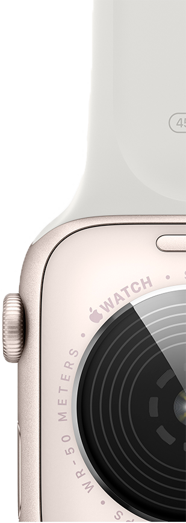

Можна закохатися.
З багатьох причин.

Основні функції для
підтримання здоров'я, безпеки
й активного способу життя.

Захист від води
Відстежуйте фази сну
Функції
«Виявлення аварій»
і «Виявлення падіння»

Задня панель відповідного кольору
На 20%
вища продуктивність
Основні характеристики
- Відповідайте на дзвінки
та повідомлення просто
із зап'ястя - До 20% швидший
за попередній
Apple Watch SE - Розширені функції безпеки,
зокрема Виявлення падіння,
Сигнал SOS і Виявлення аварій - Відстежуйте свою активність протягом дня з Apple Watch,
а потім переглядайте
тенденції в додатку «Фітнес» на iPhone - Покращений додаток «Тренування» з удосконаленими підходами
до вправ
- Отримуйте сповіщення
про високий, низький і порушений серцевий ритм - Слухайте улюблену музику,
подкасти й аудіокниги
(для використання в моделях GPS) - Захист від води
- Відстеження сну дає
змогу дізнатися,
скільки часу ви перебували
у фазах швидкого,
повільного та глибокого сну - watchOS 9 підтримує покращений додаток «Тренування», новий додаток «Ліки»,фази сну та дає змогу краще відстежувати ритм серця
Що в комплекті
Спортивний ремінець
Кабель USB-C з магнітним кріпленням для заряджання